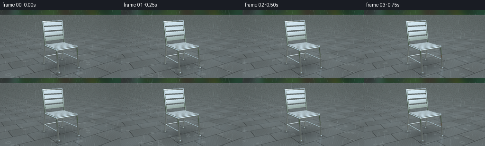
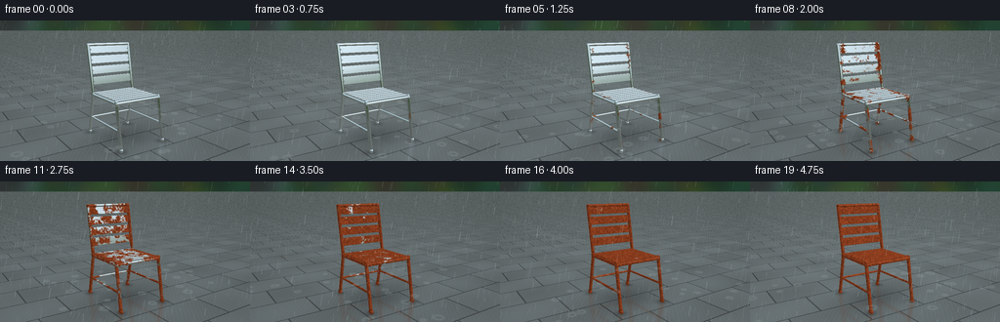

CODING AGENTS AS PIXEL WORLD MODELS
traex/GPT-6.1-Sol · phygen_158
点击播放 · 原生 RGB 像素
逐轮保存的候选
回放视频、检查图与代码变化。
每份候选均可单独播放。实际图片检查记录在下方工具轨迹中。
候选 01播放与检查图
点击播放 · 原生 RGB 像素


展开代码变化
--- 上一保存版本
+++ 本次保存版本
@@ -0,0 +1,260 @@
+from pathlib import Path
+import json
+import numpy as np
+from PIL import Image, ImageDraw, ImageFilter
+from scipy.ndimage import gaussian_filter, map_coordinates
+import artifact_io
+
+ROOT = Path(__file__).resolve().parent
+SPEC = json.loads((ROOT/'task_spec.json').read_text())
+W,H = SPEC['width'],SPEC['height']
+S=3
+SW,SH=W*S,H*S
+rng=np.random.default_rng(851)
+
+# All geometry, reflection, weather and patina are synthesized here.
+def unit(v):
+ return v/(np.linalg.norm(v,axis=-1,keepdims=True)+1e-12)
+cam=np.array([2.25,1.62,-3.4])
+target=np.array([0.,.73,0.])
+forward=unit(target-cam); right=unit(np.cross(forward,[0,1,0])); up=np.cross(right,forward)
+yy,xx=np.mgrid[0:SH,0:SW]
+focal=SH/(2*np.tan(np.deg2rad(28.5/2)))
+rd=unit(forward[None,None,:]+right[None,None,:]*(xx[...,None]-SW/2)/focal+up[None,None,:]*(SH/2-yy[...,None])/focal)
+ro=np.broadcast_to(cam,rd.shape)
+
+# A welded tubular steel garden chair, with bare polished steel slats.
+parts=[]
+def tube(a,b,r=.023,tag=0): parts.append(('capsule',np.array(a,float),np.array(b,float),r,tag))
+def box(c,size,angle=0,tag=1):
+ co,si=np.cos(angle),np.sin(angle)
+ R=np.array([[1,0,0],[0,co,-si],[0,si,co]])
+ parts.append(('box',np.array(c,float),np.array(size,float)/2,R,tag))
+for x in [-.365,.365]:
+ tube([x,.025,-.45],[x,.675,-.335],.024)
+ tube([x,.025,.48],[x,.675,.335],.024)
+ tube([x,.65,.335],[x,1.405,.475],.025)
+ tube([x,.655,-.35],[x,.655,.35],.023)
+ tube([x,.28,-.4],[x,.28,.422],.015)
+ # Small slightly rounded foot ends.
+ tube([x,.024,-.463],[x,.024,-.437],.027)
+ tube([x,.024,.467],[x,.024,.493],.027)
+tube([-.365,.655,-.35],[.365,.655,-.35],.023)
+tube([-.365,.655,.35],[.365,.655,.35],.022)
+tube([-.365,1.405,.475],[.365,1.405,.475],.025)
+tube([-.365,.275,.421],[.365,.275,.421],.015)
+# Seat slats have distinct air gaps and rolled silver edges.
+for z in np.linspace(-.304,.304,7):
+ box([0,.675,z],[.713,.026,.079])
+ tube([-.350,.681,z-.034],[.350,.681,z-.034],.004)
+ tube([-.350,.681,z+.034],[.350,.681,z+.034],.004)
+back_ang=np.arctan(.14/.755)
+for y in [.86,1.02,1.18,1.335]:
+ z=.335+(y-.65)*.14/.755
+ box([0,y,z],[.714,.115,.023],back_ang)
+ tube([-.347,y+.056,z+.010],[.347,y+.056,z+.010],.004)
+ tube([-.347,y-.056,z-.010],[.347,y-.056,z-.010],.004)
+ # welded attachments create sites for the first oxidation
+ for x in [-.334,.334]:
+ tube([x,y,z-.016],[x,y,z-.021],.009,2)
+
+
+def intersect(orig,dirs):
+ shape=dirs.shape[:-1]; o=orig.reshape(-1,3); d=dirs.reshape(-1,3)
+ best=np.full(len(d),np.inf); normal=np.zeros_like(d); ids=np.full(len(d),-1,dtype=int)
+ for i,p in enumerate(parts):
+ if p[0]=='capsule':
+ _,a,b,r,tag=p; ba=b-a; oa=o-a
+ baba=np.dot(ba,ba); bard=d@ba; baoa=oa@ba
+ rdoa=np.sum(d*oa,1); oaoa=np.sum(oa*oa,1)
+ A=baba-bard*bard; B=baba*rdoa-baoa*bard; C=baba*oaoa-baoa*baoa-r*r*baba
+ disc=B*B-A*C
+ t=(-B-np.sqrt(np.maximum(disc,0)))/(A+1e-20)
+ h=baoa+t*bard
+ valid=(disc>=0)&(h>=0)&(h<=baba)&(t>1e-4)
+ hit=np.where(valid,t,np.inf)
+ n=(oa+t[:,None]*d-ba[None,:]*(h/baba)[:,None])/r
+ for end in [a,b]:
+ oc=o-end; bb=np.sum(oc*d,1); cc=np.sum(oc*oc,1)-r*r
+ dd=bb*bb-cc; tt=-bb-np.sqrt(np.maximum(dd,0))
+ good=(dd>=0)&(tt>1e-4)&(tt<hit)
+ nn=(oc+tt[:,None]*d)/r
+ n[good]=nn[good]; hit[good]=tt[good]
+ else:
+ _,c,half,R,tag=p
+ oo=(o-c)@R; dd=d@R
+ inv=1/np.where(np.abs(dd)>1e-12,dd,1e-12)
+ t1=(-half-oo)*inv; t2=(half-oo)*inv
+ near=np.minimum(t1,t2); far=np.maximum(t1,t2)
+ hit=np.max(near,1); out=np.min(far,1)
+ axis=np.argmax(near,1)
+ good=(out>=hit)&(hit>1e-4)
+ hit=np.where(good,hit,np.inf)
+ nloc=np.zeros_like(d)
+ nloc[np.arange(len(d)),axis]=-np.sign(dd[np.arange(len(d)),axis])
+ n=nloc@R.T
+ take=hit<best
+ best[take]=hit[take]; normal[take]=n[take]; ids[take]=i
+ return best.reshape(shape),normal.reshape(*shape,3),ids.reshape(shape)
+
+# Fixed coherent microstructure rather than independently changing random pixels.
+noisegrid=rng.random((64,64,64)).astype(np.float32)
+def field(p,scale):
+ q=np.moveaxis((p*scale+24)%61, -1,0)
+ return map_coordinates(noisegrid,q,order=1,mode='wrap')
+
+def environment(d):
+ h=np.clip(d[...,1],0,1)
+ sky=np.array([168.,183.,189.])[None,:]*(1-h[...,None]) + np.array([115.,143.,161.])[None,:]*h[...,None]
+ green=np.array([46.,65.,43.])+12*np.sin(d[...,0:1]*24)*np.cos(d[...,2:3]*18)
+ # dark hedge horizon, bright sky top, warm patio lower hemisphere.
+ a=np.clip((d[...,1]-.055)/.14,0,1)[...,None]
+ sky=green*(1-a)+sky*a
+ lower=d[...,1]<0
+ sky[lower]=np.array([73,80,78])+35*np.abs(d[lower,1:2])
+ # elongated broad white reflections on curved chrome
+ light=np.exp(-((d[...,0]+.4)**2/0.025+(d[...,1]-.58)**2/.20+(d[...,2]+.45)**2/.25))
+ return sky+light[...,None]*85
+
+T,N,IDs=intersect(ro,rd)
+mask=IDs>=0
+P=ro+rd*np.where(mask,T,0)[...,None]
+points=P[mask]; norms=unit(N[mask]); view=-rd[mask]
+reflect=unit(2*np.sum(norms*view,1)[:,None]*norms-view)
+env=environment(reflect)
+ld=unit(np.array([-3,6,-4.])); lam=np.clip(norms@ld,0,1)
+halfv=unit(view+ld)
+specular=np.maximum(0,np.sum(norms*halfv,1))**75
+fine=field(points,230)
+coarse=field(points,14); mid=field(points,55)
+# Damp joints, slat ends and low feet are the first places to corrode.
+seam=np.exp(-((np.abs(points[:,0])-.335)/.055)**2)
+low=np.exp(-points[:,1]/.18)
+patina_field=.48*coarse+.29*mid+.10*fine-.20*seam-.12*low
+# Fine longitudinal polishing marks in the new metal.
+brush=(np.sin(points[:,0]*1700+points[:,2]*900)*.6+fine-.5)*2.5
+metal=np.clip(env*1.08+lam[:,None]*27+specular[:,None]*115+brush[:,None],0,255)
+# Reflection of the chair in the wet paving, using the same analytic geometry.
+tground=-cam[1]/rd[...,1]
+ground=(rd[...,1]<-1e-5)&(tground>0)
+GP=ro+rd*tground[...,None]
+rdr=rd.copy(); rdr[...,1]*=-1
+orig=GP.copy(); orig[...,1]=.0003
+RT,RN,RI=intersect(orig,rdr)
+rm=(RI>=0)&ground
+rP=orig+rdr*np.where(rm,RT,0)[...,None]
+
+# The garden beyond: out-of-focus wet timber fence, hedges and tree bokeh.
+bg=np.zeros((SH,SW,3),float)
+v=yy/SH
+bg[:]=np.array([128,151,158]) + (1-v[...,None])*25
+bg+=rng.normal(0,1.5,(SH,SW,1))
+# Procedural foliage clusters rendered on an independent distant plate.
+plate=Image.fromarray(np.uint8(np.clip(bg,0,255)))
+draw=ImageDraw.Draw(plate)
+for j in range(540):
+ x=rng.uniform(-80,SW+80); y=rng.uniform(-150,SH*.63)
+ rad=rng.uniform(8,60)
+ c=(int(rng.uniform(31,69)),int(rng.uniform(51,87)),int(rng.uniform(35,62)))
+ draw.ellipse((x-rad,y-rad*.75,x+rad,y+rad*.75),fill=c)
+plate=plate.filter(ImageFilter.GaussianBlur(7*S))
+bg=np.array(plate,dtype=float)
+# Fence at the far edge of the patio; narrow planks and damp dark seams.
+wallt=(2.8-cam[2])/rd[...,2]
+wallp=ro+rd*wallt[...,None]
+fencemask=(wallt>0)&(wallp[...,1]>.01)&(wallp[...,1]<1.07)&(rd[...,2]>0)
+u=wallp[...,0]; z=wallp[...,1]
+plank=np.floor((u+4)/.19)
+woodgrain=np.sin(u*350+np.sin(z*15)*2)+.4*np.sin(u*890+z*13)
+wood=np.stack([83+woodgrain*3+5*np.sin(plank*4),86+woodgrain*2+4*np.sin(plank*4),76+woodgrain*2+4*np.sin(plank*4)],-1)
+joint=((u+4)% .19)<.006
+wood[joint]*=.63
+rails=(np.abs(z-.18)<.027)|(np.abs(z-.85)<.025)
+wood[rails]*=.78
+bg[fencemask]=wood[fencemask]
+bg=np.array(Image.fromarray(np.uint8(np.clip(bg,0,255))).filter(ImageFilter.GaussianBlur(1.15*S)),float)
+
+# Large wet paving slabs with irregular pores, joints, moss, and puddles.
+gx,gz=GP[...,0],GP[...,2]
+stone_noise=(np.sin(gx*89+gz*72)+np.sin(gx*173-gz*111)+np.sin(gx*319+gz*275))*1.5
+row=np.floor(gz/.62); col=np.floor((gx+(row%2)*.45)/.9)
+tile=np.sin(row*22+col*15)*3
+base=np.stack([100+stone_noise+tile,108+stone_noise+tile,109+stone_noise+tile],-1)
+seams=(np.minimum((gz%.62),.62-gz%.62)<.009)|(np.minimum(((gx+(row%2)*.45)%.9),.9-((gx+(row%2)*.45)%.9))<.01)
+base[seams]*=.63
+wet=.5+.5*np.sin(gx*2.7+gz*1.9)*np.sin(gz*3.1-gx*1.4)
+base=base*(1-.14*wet[...,None])+environment(rdr)*(.15*wet[...,None])
+# Broad soft ambient/contact shadows beneath the frame.
+shadow=.22*np.exp(-((gx/.61)**2+((gz-.02)/.61)**2)*1.5)
+for x in [-.365,.365]:
+ for zz in [-.45,.48]: shadow+=.25*np.exp(-((gx-x)**2+(gz-zz)**2)/.007)
+base*=1-np.clip(shadow,0,.6)[...,None]
+bg[ground]=base[ground]
+
+# World coordinate projection for physically horizontal puddle rings.
+def project(p):
+ p=np.asarray(p)-cam
+ depth=p@forward
+ return np.stack([SW/2+(p@right)/depth*focal,SH/2-(p@up)/depth*focal],-1)
+
+frames=[]
+for frame in range(SPEC['frames']):
+ t=frame/(SPEC['frames']-1)
+ rust=np.clip((t*.95-.08-patina_field)*9,0,1)
+ rust*=np.clip(t*8,0,1)
+ crust=field(points,110)
+ rustcolor=np.stack([104+63*mid+25*crust,43+29*mid+17*crust,20+15*mid+11*crust],-1)
+ rustcolor*= (.66+.37*lam[:,None])
+ rustcolor+=specular[:,None]*18
+ # A thin dark tarnish precedes the thicker orange-brown oxide.
+ tarnish=np.clip(t*.75-patina_field+.03,0,.6)
+ clean=metal*(1-tarnish[:,None]*.42)
+ surface=clean*(1-rust[:,None])+rustcolor*rust[:,None]
+ # Stable, minute rain beads shine on both polished and corroded steel.
+ bead=((fine>.73)&(mid>.6)).astype(float)
+ surface+=bead[:,None]*(12+22*np.maximum(norms[:,1:2],0))
+ img=bg.copy()
+ # Muted, slightly blurred mirror reflection in the soaked stone.
+ rr=np.zeros_like(img)
+ if np.any(rm):
+ rp=rP[rm]; rn=unit(RN[rm]); rv=-rdr[rm]
+ re=environment(unit(2*np.sum(rn*rv,1)[:,None]*rn-rv))
+ rf=.48*field(rp,14)+.29*field(rp,55)+.10*field(rp,230)-.20*np.exp(-((np.abs(rp[:,0])-.335)/.055)**2)-.12*np.exp(-rp[:,1]/.18)
+ ra=np.clip((t*.95-.08-rf)*9,0,1)*np.clip(t*8,0,1)
+ rc=np.stack([104+63*field(rp,55),43+29*field(rp,55),20+15*field(rp,55)],-1)*.8
+ rr[rm]=re*(1-ra[:,None])+rc*ra[:,None]
+ reflection=np.asarray(Image.fromarray(np.uint8(np.clip(rr,0,255))).filter(ImageFilter.GaussianBlur(1.3*S)),float)
+ ralpha=np.asarray(Image.fromarray(np.uint8(rm*255)).filter(ImageFilter.GaussianBlur(1.3*S)),float)/255
+ alpha=ralpha*.24*(.45+.55*wet)*ground
+ img=img*(1-alpha[...,None])+reflection*.24*(.45+.55*wet[...,None])*ground[...,None]
+ img[mask]=surface
+ # Wet atmosphere has gentle timelapse illumination variation, not camera motion.
+ illumination=1+.027*np.sin(t*7.1)
+ img*=illumination
+ image=Image.fromarray(np.uint8(np.clip(img,0,255))).convert('RGBA')
+ rain=Image.new('RGBA',(SW,SH),(0,0,0,0)); dr=ImageDraw.Draw(rain)
+ rngf=np.random.default_rng(905+frame)
+ # Small concentric impact ripples spread across the horizontal paving.
+ for j in range(35):
+ x=rngf.uniform(-2.2,2.2); z0=rngf.uniform(-1.3,1.6)
+ radius=rngf.uniform(.015,.06)
+ for k in range(2):
+ a=np.linspace(0,2*np.pi,30)
+ ring=np.stack([x+(radius+k*.022)*np.cos(a),np.full_like(a,.004),z0+(radius+k*.022)*np.sin(a)],-1)
+ q=project(ring)
+ if np.all(np.isfinite(q)):
+ dr.line([tuple(v) for v in q],fill=(179,193,194,50-k*16),width=1*S)
+ for j in range(290):
+ x=rngf.uniform(-10,SW+10); y=rngf.uniform(-20,SH+20)
+ length=rngf.uniform(3,11)*S
+ opacity=int(rngf.uniform(20,65))
+ dr.line((x,y,x-length*.16,y+length),fill=(195,214,219,opacity),width=1 if j%4 else 2)
+ image=Image.alpha_composite(image,rain)
+ # A restrained lens vignette keeps attention on the chair.
+ out=np.array(image.convert('RGB'),float)
+ vignette=1-.11*((xx-SW*.5)/(SW*.7))**2-.065*((yy-SH*.5)/(SH*.8))**2
+ out*=vignette[...,None]
+ out=Image.fromarray(np.uint8(np.clip(out,0,255))).resize((W,H),Image.Resampling.LANCZOS)
+ frames.append(np.asarray(out))
+artifact_io.save(np.stack(frames),ROOT)
+print('Saved',len(frames),'RGB frames')
可观测工具轨迹
实际执行的命令与返回图片。
命令 1exit 0
/bin/bash -lc 'ls -la; cat prompt.txt; cat GENERATION_RULES.md; cat task_spec.json'
命令 2exit 0
/bin/bash -lc "cat artifact_io.py; python - <<'PY' import importlib.util for m in ['numpy','PIL','scipy']: print(m, bool(importlib.util.find_spec(m))) PY"
命令 3exit 0
/bin/bash -lc "cat > generate.py <<'PY'
from pathlib import Path
import json
import numpy as np
from PIL import Image, ImageDraw, ImageFilter
from scipy.ndimage import gaussian_filter, map_coordinates
import artifact_io
ROOT = Path(__file__).resolve().parent
SPEC = json.loads((ROOT/'task_spec.json').read_text())
W,H = SPEC['width'],SPEC['height']
S=3
SW,SH=W*S,H*S
rng=np.random.default_rng(851)
# All geometry, reflection, weather and patina are synthesized here.
def unit(v):
return v/(np.linalg.norm(v,axis=-1,keepdims=True)+1e-12)
cam=np.array([2.25,1.62,-3.4])
target=np.array([0.,.73,0.])
forward=unit(target-cam); right=unit(np.cross(forward,[0,1,0])); up=np.cross(right,forward)
yy,xx=np.mgrid[0:SH,0:SW]
focal=SH/(2*np.tan(np.deg2rad(28.5/2)))
rd=unit(forward[None,None,:]+right[None,None,:]*(xx[...,None]-SW/2)/focal+up[None,None,:]*(SH/2-yy[...,None])/focal)
ro=np.broadcast_to(cam,rd.shape)
# A welded tubular steel garden chair, with bare polished steel slats.
parts=[]
def tube(a,b,r=.023,tag=0): parts.append(('capsule',np.array(a,float),np.array(b,float),r,tag))
def box(c,size,angle=0,tag=1):
co,si=np.cos(angle),np.sin(angle)
R=np.array([[1,0,0],[0,co,-si],[0,si,co]])
parts.append(('box',np.array(c,float),np.array(size,float)/2,R,tag))
for x in [-.365,.365]:
tube([x,.025,-.45],[x,.675,-.335],.024)
tube([x,.025,.48],[x,.675,.335],.024)
tube([x,.65,.335],[x,1.405,.475],.025)
tube([x,.655,-.35],[x,.655,.35],.023)
tube([x,.28,-.4],[x,.28,.422],.015)
# Small slightly rounded foot ends.
tube([x,.024,-.463],[x,.024,-.437],.027)
tube([x,.024,.467],[x,.024,.493],.027)
tube([-.365,.655,-.35],[.365,.655,-.35],.023)
tube([-.365,.655,.35],[.365,.655,.35],.022)
tube([-.365,1.405,.475],[.365,1.405,.475],.025)
tube([-.365,.275,.421],[.365,.275,.421],.015)
# Seat slats have distinct air gaps and rolled silver edges.
for z in np.linspace(-.304,.304,7):
box([0,.675,z],[.713,.026,.079])
tube([-.350,.681,z-.034],[.350,.681,z-.034],.004)
tube([-.350,.681,z+.034],[.350,.681,z+.034],.004)
back_ang=np.arctan(.14/.755)
for y in [.86,1.02,1.18,1.335]:
z=.335+(y-.65)*.14/.755
box([0,y,z],[.714,.115,.023],back_ang)
tube([-.347,y+.056,z+.010],[.347,y+.056,z+.010],.004)
tube([-.347,y-.056,z-.010],[.347,y-.056,z-.010],.004)
# welded attachments create sites for the first oxidation
for x in [-.334,.334]:
tube([x,y,z-.016],[x,y,z-.021],.009,2)
def intersect(orig,dirs):
shape=dirs.shape[:-1]; o=orig.reshape(-1,3); d=dirs.reshape(-1,3)
best=np.full(len(d),np.inf); normal=np.zeros_like(d); ids=np.full(len(d),-1,dtype=int)
for i,p in enumerate(parts):
if p[0]=='capsule':
_,a,b,r,tag=p; ba=b-a; oa=o-a
baba=np.dot(ba,ba); bard=d@ba; baoa=oa@ba
rdoa=np.sum(d*oa,1); oaoa=np.sum(oa*oa,1)
A=baba-bard*bard; B=baba*rdoa-baoa*bard; C=baba*oaoa-baoa*baoa-r*r*baba
disc=B*B-A*C
t=(-B-np.sqrt(np.maximum(disc,0)))/(A+1e-20)
h=baoa+t*bard
valid=(disc>=0)&(h>=0)&(h<=baba)&(t>1e-4)
hit=np.where(valid,t,np.inf)
n=(oa+t[:,None]*d-ba[None,:]*(h/baba)[:,None])/r
for end in [a,b]:
oc=o-end; bb=np.sum(oc*d,1); cc=np.sum(oc*oc,1)-r*r
dd=bb*bb-cc; tt=-bb-np.sqrt(np.maximum(dd,0))
good=(dd>=0)&(tt>1e-4)&(tt<hit)
nn=(oc+tt[:,None]*d)/r
n[good]=nn[good]; hit[good]=tt[good]
else:
_,c,half,R,tag=p
oo=(o-c)@R; dd=d@R
inv=1/np.where(np.abs(dd)>1e-12,dd,1e-12)
t1=(-half-oo)*inv; t2=(half-oo)*inv
near=np.minimum(t1,t2); far=np.maximum(t1,t2)
hit=np.max(near,1); out=np.min(far,1)
axis=np.argmax(near,1)
good=(out>=hit)&(hit>1e-4)
hit=np.where(good,hit,np.inf)
nloc=np.zeros_like(d)
nloc[np.arange(len(d)),axis]=-np.sign(dd[np.arange(len(d)),axis])
n=nloc@R.T
take=hit<best
best[take]=hit[take]; normal[take]=n[take]; ids[take]=i
return best.reshape(shape),normal.reshape(*shape,3),ids.reshape(shape)
# Fixed coherent microstructure rather than independently changing random pixels.
noisegrid=rng.random((64,64,64)).astype(np.float32)
def field(p,scale):
q=np.moveaxis((p*scale+24)%61, -1,0)
return map_coordinates(noisegrid,q,order=1,mode='wrap')
def environment(d):
h=np.clip(d[...,1],0,1)
sky=np.array([168.,183.,189.])[None,:]*(1-h[...,None]) + np.array([115.,143.,161.])[None,:]*h[...,None]
green=np.array([46.,65.,43.])+12*np.sin(d[...,0:1]*24)*np.cos(d[...,2:3]*18)
# dark hedge horizon, bright sky top, warm patio lower hemisphere.
a=np.clip((d[...,1]-.055)/.14,0,1)[...,None]
sky=green*(1-a)+sky*a
lower=d[...,1]<0
sky[lower]=np.array([73,80,78])+35*np.abs(d[lower,1:2])
# elongated broad white reflections on curved chrome
light=np.exp(-((d[...,0]+.4)**2/0.025+(d[...,1]-.58)**2/.20+(d[...,2]+.45)**2/.25))
return sky+light[...,None]*85
T,N,IDs=intersect(ro,rd)
mask=IDs>=0
P=ro+rd*np.where(mask,T,0)[...,None]
points=P[mask]; norms=unit(N[mask]); view=-rd[mask]
reflect=unit(2*np.sum(norms*view,1)[:,None]*norms-view)
env=environment(reflect)
ld=unit(np.array([-3,6,-4.])); lam=np.clip(norms@ld,0,1)
halfv=unit(view+ld)
specular=np.maximum(0,np.sum(norms*halfv,1))**75
fine=field(points,230)
coarse=field(points,14); mid=field(points,55)
# Damp joints, slat ends and low feet are the first places to corrode.
seam=np.exp(-((np.abs(points[:,0])-.335)/.055)**2)
low=np.exp(-points[:,1]/.18)
patina_field=.48*coarse+.29*mid+.10*fine-.20*seam-.12*low
# Fine longitudinal polishing marks in the new metal.
brush=(np.sin(points[:,0]*1700+points[:,2]*900)*.6+fine-.5)*2.5
metal=np.clip(env*1.08+lam[:,None]*27+specular[:,None]*115+brush[:,None],0,255)
# Reflection of the chair in the wet paving, using the same analytic geometry.
tground=-cam[1]/rd[...,1]
ground=(rd[...,1]<-1e-5)&(tground>0)
GP=ro+rd*tground[...,None]
rdr=rd.copy(); rdr[...,1]*=-1
orig=GP.copy(); orig[...,1]=.0003
RT,RN,RI=intersect(orig,rdr)
rm=(RI>=0)&ground
rP=orig+rdr*np.where(rm,RT,0)[...,None]
# The garden beyond: out-of-focus wet timber fence, hedges and tree bokeh.
bg=np.zeros((SH,SW,3),float)
v=yy/SH
bg[:]=np.array([128,151,158]) + (1-v[...,None])*25
bg+=rng.normal(0,1.5,(SH,SW,1))
# Procedural foliage clusters rendered on an independent distant plate.
plate=Image.fromarray(np.uint8(np.clip(bg,0,255)))
draw=ImageDraw.Draw(plate)
for j in range(540):
x=rng.uniform(-80,SW+80); y=rng.uniform(-150,SH*.63)
rad=rng.uniform(8,60)
c=(int(rng.uniform(31,69)),int(rng.uniform(51,87)),int(rng.uniform(35,62)))
draw.ellipse((x-rad,y-rad*.75,x+rad,y+rad*.75),fill=c)
plate=plate.filter(ImageFilter.GaussianBlur(7*S))
bg=np.array(plate,dtype=float)
# Fence at the far edge of the patio; narrow planks and damp dark seams.
wallt=(2.8-cam[2])/rd[...,2]
wallp=ro+rd*wallt[...,None]
fencemask=(wallt>0)&(wallp[...,1]>.01)&(wallp[...,1]<1.07)&(rd[...,2]>0)
u=wallp[...,0]; z=wallp[...,1]
plank=np.floor((u+4)/.19)
woodgrain=np.sin(u*350+np.sin(z*15)*2)+.4*np.sin(u*890+z*13)
wood=np.stack([83+woodgrain*3+5*np.sin(plank*4),86+woodgrain*2+4*np.sin(plank*4),76+woodgrain*2+4*np.sin(plank*4)],-1)
joint=((u+4)% .19)<.006
wood[joint]*=.63
rails=(np.abs(z-.18)<.027)|(np.abs(z-.85)<.025)
wood[rails]*=.78
bg[fencemask]=wood[fencemask]
bg=np.array(Image.fromarray(np.uint8(np.clip(bg,0,255))).filter(ImageFilter.GaussianBlur(1.15*S)),float)
# Large wet paving slabs with irregular pores, joints, moss, and puddles.
gx,gz=GP[...,0],GP[...,2]
stone_noise=(np.sin(gx*89+gz*72)+np.sin(gx*173-gz*111)+np.sin(gx*319+gz*275))*1.5
row=np.floor(gz/.62); col=np.floor((gx+(row%2)*.45)/.9)
tile=np.sin(row*22+col*15)*3
base=np.stack([100+stone_noise+tile,108+stone_noise+tile,109+stone_noise+tile],-1)
seams=(np.minimum((gz%.62),.62-gz%.62)<.009)|(np.minimum(((gx+(row%2)*.45)%.9),.9-((gx+(row%2)*.45)%.9))<.01)
base[seams]*=.63
wet=.5+.5*np.sin(gx*2.7+gz*1.9)*np.sin(gz*3.1-gx*1.4)
base=base*(1-.14*wet[...,None])+environment(rdr)*(.15*wet[...,None])
# Broad soft ambient/contact shadows beneath the frame.
shadow=.22*np.exp(-((gx/.61)**2+((gz-.02)/.61)**2)*1.5)
for x in [-.365,.365]:
for zz in [-.45,.48]: shadow+=.25*np.exp(-((gx-x)**2+(gz-zz)**2)/.007)
base*=1-np.clip(shadow,0,.6)[...,None]
bg[ground]=base[ground]
# World coordinate projection for physically horizontal puddle rings.
def project(p):
p=np.asarray(p)-cam
depth=p@forward
return np.stack([SW/2+(p@right)/depth*focal,SH/2-(p@up)/depth*focal],-1)
frames=[]
for frame in range(SPEC['frames']):
t=frame/(SPEC['frames']-1)
rust=np.clip((t*.95-.08-patina_field)*9,0,1)
rust*=np.clip(t*8,0,1)
crust=field(points,110)
rustcolor=np.stack([104+63*mid+25*crust,43+29*mid+17*crust,20+15*mid+11*crust],-1)
rustcolor*= (.66+.37*lam[:,None])
rustcolor+=specular[:,None]*18
# A thin dark tarnish precedes the thicker orange-brown oxide.
tarnish=np.clip(t*.75-patina_field+.03,0,.6)
clean=metal*(1-tarnish[:,None]*.42)
surface=clean*(1-rust[:,None])+rustcolor*rust[:,None]
# Stable, minute rain beads shine on both polished and corroded steel.
bead=((fine>.73)&(mid>.6)).astype(float)
surface+=bead[:,None]*(12+22*np.maximum(norms[:,1:2],0))
img=bg.copy()
# Muted, slightly blurred mirror reflection in the soaked stone.
rr=np.zeros_like(img)
if np.any(rm):
rp=rP[rm]; rn=unit(RN[rm]); rv=-rdr[rm]
re=environment(unit(2*np.sum(rn*rv,1)[:,None]*rn-rv))
rf=.48*field(rp,14)+.29*field(rp,55)+.10*field(rp,230)-.20*np.exp(-((np.abs(rp[:,0])-.335)/.055)**2)-.12*np.exp(-rp[:,1]/.18)
ra=np.clip((t*.95-.08-rf)*9,0,1)*np.clip(t*8,0,1)
rc=np.stack([104+63*field(rp,55),43+29*field(rp,55),20+15*field(rp,55)],-1)*.8
rr[rm]=re*(1-ra[:,None])+rc*ra[:,None]
reflection=np.asarray(Image.fromarray(np.uint8(np.clip(rr,0,255))).filter(ImageFilter.GaussianBlur(1.3*S)),float)
ralpha=np.asarray(Image.fromarray(np.uint8(rm*255)).filter(ImageFilter.GaussianBlur(1.3*S)),float)/255
alpha=ralpha*.24*(.45+.55*wet)*ground
img=img*(1-alpha[...,None])+reflection*.24*(.45+.55*wet[...,None])*ground[...,None]
img[mask]=surface
# Wet atmosphere has gentle timelapse illumination variation, not camera motion.
illumination=1+.027*np.sin(t*7.1)
img*=illumination
image=Image.fromarray(np.uint8(np.clip(img,0,255))).convert('RGBA')
rain=Image.new('RGBA',(SW,SH),(0,0,0,0)); dr=ImageDraw.Draw(rain)
rngf=np.random.default_rng(905+frame)
# Small concentric impact ripples spread across the horizontal paving.
for j in range(35):
x=rngf.uniform(-2.2,2.2); z0=rngf.uniform(-1.3,1.6)
radius=rngf.uniform(.015,.06)
for k in range(2):
a=np.linspace(0,2*np.pi,30)
ring=np.stack([x+(radius+k*.022)*np.cos(a),np.full_like(a,.004),z0+(radius+k*.022)*np.sin(a)],-1)
q=project(ring)
if np.all(np.isfinite(q)):
dr.line([tuple(v) for v in q],fill=(179,193,194,50-k*16),width=1*S)
for j in range(290):
x=rngf.uniform(-10,SW+10); y=rngf.uniform(-20,SH+20)
length=rngf.uniform(3,11)*S
opacity=int(rngf.uniform(20,65))
dr.line((x,y,x-length*.16,y+length),fill=(195,214,219,opacity),width=1 if j%4 else 2)
image=Image.alpha_composite(image,rain)
# A restrained lens vignette keeps attention on the chair.
out=np.array(image.convert('RGB'),float)
vignette=1-.11*((xx-SW*.5)/(SW*.7))**2-.065*((yy-SH*.5)/(SH*.8))**2
out*=vignette[...,None]
out=Image.fromarray(np.uint8(np.clip(out,0,255))).resize((W,H),Image.Resampling.LANCZOS)
frames.append(np.asarray(out))
artifact_io.save(np.stack(frames),ROOT)
print('Saved',len(frames),'RGB frames')
PY
python generate.py"命令 4exit 0
/bin/bash -lc "python - <<'PY'
from pathlib import Path
from PIL import Image
import numpy as np
p=Path('.')
a=np.load(p/'pixels.npz')['pixels']
assert a.shape==(144,256,20)
assert len(list((p/'frames').glob('*.png')))==20
assert all(Image.open(q).mode=='RGB' and Image.open(q).size==(256,144) for q in (p/'frames').glob('*.png'))
print('Verified: 20 RGB frames, 256 Ã 144; player and compressed pixels exist:',(p/'index.html').exists(),(p/'pixels.npz').exists())
PY"视觉工具实际返回图片 1

保存候选 1 份；完成命令 4 次；可验证图片返回 1 张。原始 API 响应与完整日志保留在本地。